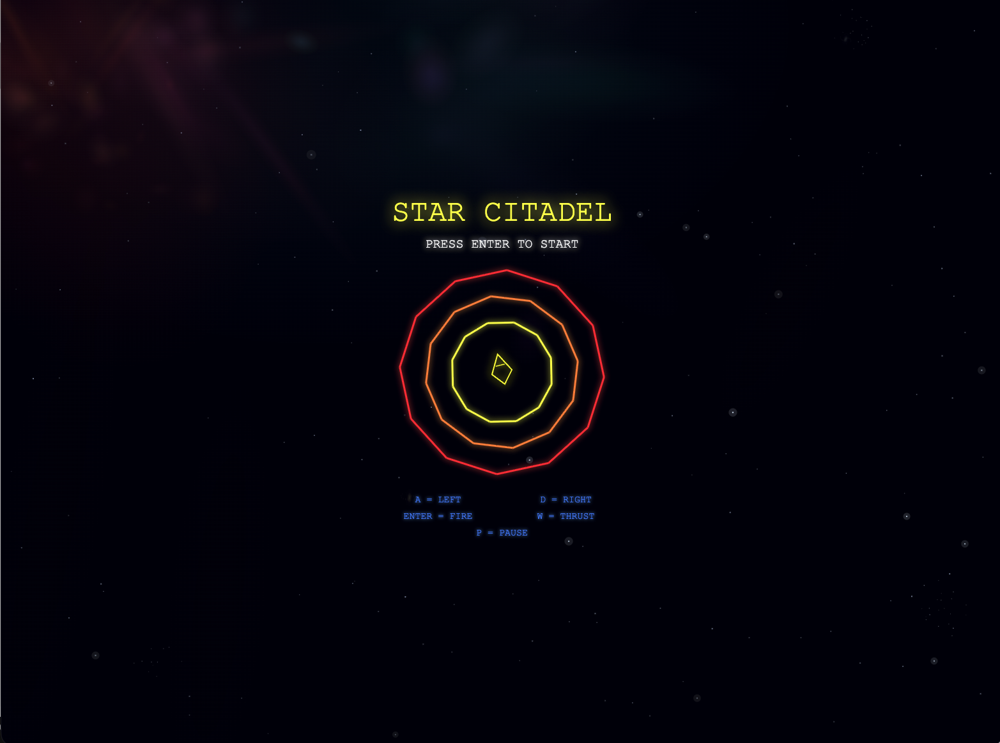

Star Citadel
I made an emulation of my favorite childhood arcade game, Star Castle.
Star Castle is a 1980 multidirectional shooter video game developed and published by Cinematronics for arcades. The game involves obliterating a series of defenses orbiting a stationary turret in the center of the screen. The arcade game uses vector graphics on a black and white display, with the colors of the rings and screen provided by a transparent plastic overlay. Star Castle was designed by Tim Skelly and programmed by Scott Boden; Skelly created a number of other vector games for Cinematronics, including Starhawk, Armor Attack, and Rip Off. A Vectrex port of Star Castle was released in 1983.
The object of Star Castle is to destroy an enemy cannon which sits in the center of three concentric, rotating energy shield rings while avoiding or shooting "mines"–enemies that spawn from the core, pass through the energy rings, and then home in on the player's ship. The player's spaceship can rotate, thrust forward, and fire small projectiles. The cannon's shields are composed of twelve sections, and each section takes two hits to destroy. Once a section is breached, rings beneath it are exposed to fire.
A color overlay tints the rings yellow, orange, and red and the rest of the playfield blue. Once the innermost ring has been breached, the central weapon is susceptible to attack, but the player is also more vulnerable at this point, as with the shield rings eliminated, the gun can fire out a large projectile that hisses with white noise. Moreover, the central core tracks player movement at all times. If the player manages to hit the cannon, it explodes violently, collapsing the remnants of the shield rings, and an extra ship is awarded. The next level then starts with a new gun and fully restored shield rings, but the difficulty is increased (the mines move more rapidly, the rings rotate more quickly, and the core tracks the player at a faster rate).
If the player completely destroys the outermost shield ring, the cannon will create a new one. The middle ring expands to replace the lost outer ring, the inner ring replaces the middle, and a new ring emerges from the core to become the inner ring. Therefore, in order to penetrate the cannon's defenses, the player must be careful not to completely obliterate the outer ring.
The three homing mines will destroy the player's ship on contact. The mines can be destroyed, but they are very small and difficult to hit, and the player does not receive points for destroying them. Mines are revived when shield rings regenerate (some variants keep three mines churning constantly so that a new mine respawns from the core as soon as one is destroyed). As the player progresses through the levels, the mines get faster and faster, forcing the player to keep moving to avoid them.
Play my Star Castle inspired emulation, Star Citadel
